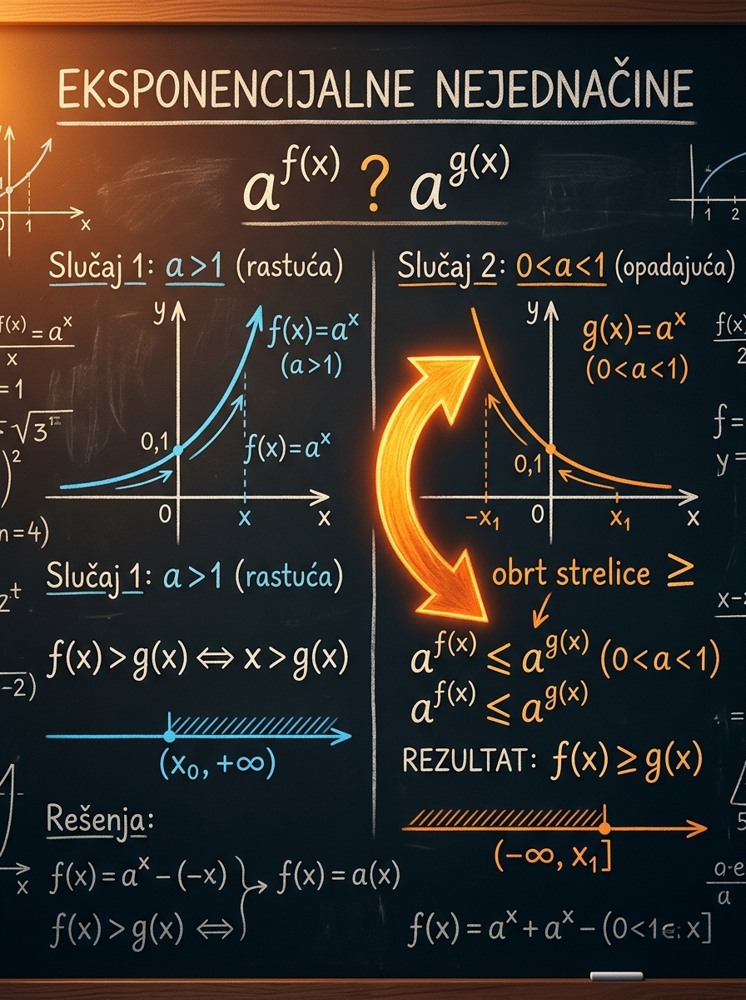

Šta učiš
Kako da iz eksponencijalne nejednačine pređeš na linearnu ili kvadratnu nejednačinu
Učiš redosled: baza, oblik zadatka, transformacija, pa tek onda rešavanje.
Ovde nije dovoljno da znaš kako se rešavaju eksponencijalne jednačine. Moraš da razumeš i kako se ponaša funkcija \(y=a^x\): ako raste, znak ostaje isti; ako opada, znak se okreće. Upravo na toj tački prijemni najčešće odvaja sigurno znanje od rutinskog računanja.
Učiš redosled: baza, oblik zadatka, transformacija, pa tek onda rešavanje.
Ko ovo radi napamet, lako okrene znak i kad ne sme ili zaboravi da ga okrene kada mora.
Brza promena baze i dobar uvid u intervale često vrede više od dugog računa.

Eksponencijalne nejednačine izgledaju slično kao eksponencijalne jednačine, ali imaju jednu dodatnu logičku zamku. Čim ne znaš da li funkcija raste ili opada, lako dobiješ potpuno pogrešan interval rešenja iako je ostatak računa bio korektan.
Svođenje na istu bazu i smena \(u=a^x\) ostaju, ali više nije dovoljno "naći vrednost". Moraš da odrediš ceo skup rešenja.
To je centralna ideja ove lekcije. Ako je razumeš, pravila nećeš učiti napamet nego ćeš ih izvoditi iz smisla.
Upravo zbog toga zadaci često ciljaju baze manje od 1 ili kombinacije poput \(4\) i \(\frac12\).
To je nejednačina u kojoj se nepoznata pojavljuje u eksponentu. Najjednostavniji oblik je \(a^{f(x)} \square a^{g(x)}\), ali zadaci često dolaze i kao zbir ili razlika više eksponencijalnih članova, ili kao kvadratna nejednačina po izrazu \(a^x\).
Prvi oblik traži razumevanje monotonosti. Drugi traži povezivanje baza. Treći traži smenu \(u=a^x\) i rešavanje nejednačine u novoj promenljivoj.
Ako su baze iste, glavni posao je da pravilno preneseš nejednakost na eksponente.
Kod baza \(4\) i \(8\), ili \(\frac14\) i \(\frac12\), stvar rešava dobra promena oblika pre bilo kakvog rešavanja.
Kada vidiš \(a^{2x}\) i \(a^x\), često rešavaš običnu kvadratnu nejednačinu uz obavezni uslov \(u>0\).
Ovo je srce cele lekcije. Eksponencijalna funkcija \(y=a^x\) je strogo monotona. Kada \(a>1\), ona raste. Kada je \(0<a<1\), ona opada. Zbog toga je poređenje vrednosti funkcije isto što i poređenje eksponenata samo kod rastuće funkcije; kod opadajuće se poredak obrće.
Na primer, pošto je \(2^x\) rastuća funkcija, iz \(2^{x+1} > 2^3\) odmah sledi \(x+1>3\).
Na primer, pošto je \(\left(\frac12\right)^x\) opadajuća funkcija, iz \(\left(\frac12\right)^{2x-1}\le\left(\frac12\right)^3\) sledi \(2x-1\ge 3\).
Kod baze \(2\) eksponent \(5\) daje veću vrednost od eksponenta \(2\). Kod baze \(\frac12\) dešava se suprotno: \(\left(\frac12\right)^5\) je manje od \(\left(\frac12\right)^2\). Zato baza odlučuje kako čitaš nejednačinu.
Ovo je precizna formulacija koju vredi zapamtiti. Ako umeš ovako da je izgovoriš, mnogo je manja šansa da pravilo pomešaš u zadatku.
Iza većine zadataka stoje četiri prepoznatljiva obrasca. Važno je da ih vidiš brzo, jer se tada eksponencijalna nejednačina svodi na nešto što već dobro umeš: linearnu nejednačinu, kvadratnu nejednačinu ili interval po smeni \(u=a^x\).
Najjednostavniji slučaj. Cela poenta je u pravilnom čitanju monotonosti.
Najpre prevedi baze, pa tek onda upoređuj eksponente.
Često je dovoljno da iskoristiš \(a^{x+1}=a\cdot a^x\).
Posle rešavanja po \(u\) obavezno se vraćaš na promenljivu \(x\).
Menjaj bazu, znak i koeficijente u eksponentima. Levo vidiš kako izgleda \(y=a^t\), a desno kako se ponašaju eksponenti \(m_1x+b_1\) i \(m_2x+b_2\). Donja brojna prava pokazuje konačni skup rešenja.
Počni od baze. To je najvažniji izbor u celoj laboratoriji.
Primeri su poređani tako da prvo učvrste osnovnu logiku, a zatim polako uvedu tipične prijemne oblike. Nemoj samo da pratiš račun: gledaj zašto je baš taj metod izabran.
Najpre prepoznaj istu bazu: \(8=2^3\). Zato zadatak postaje
\[ 2^{x+1} > 2^3 \]
Baza je \(2>1\), pa funkcija raste. Znak se ne menja:
\[ x+1>3 \]
Reši običnu linearnu nejednačinu:
\[ x>2 \]
Desnu stranu napiši u istoj osnovi:
\[ 8=2^3=\left(\frac12\right)^{-3} \]
Dobijamo \(\left(\frac12\right)^{3x-1}\le\left(\frac12\right)^{-3}\).
Pošto je baza \(\frac12\) između \(0\) i \(1\), funkcija opada. Zato se znak obrće:
\[ 3x-1 \ge -3 \]
Reši linearnu nejednačinu:
\[ 3x\ge -2 \Rightarrow x\ge -\frac23 \]
Obe strane prevedi na osnovu \(2\):
\[ 4^x=(2^2)^x=2^{2x}, \qquad 8^{x-1}=(2^3)^{x-1}=2^{3x-3} \]
Sada imaš istu bazu \(2>1\), pa znak ostaje isti:
\[ 2x\ge 3x-3 \]
Izoluj \(x\):
\[ -x\ge -3 \Rightarrow x\le 3 \]
Iskoristi \(2^{x+1}=2\cdot 2^x\):
\[ 2\cdot 2^x + 2^x < 12 \Rightarrow 3\cdot 2^x < 12 \]
Podeli sa \(3\):
\[ 2^x < 4 = 2^2 \]
Baza je \(2>1\), pa znak ostaje:
\[ x<2 \]
Pošto se pojavljuju \(2^{2x}\) i \(2^x\), uvedi smenu \(u=2^x\). Važno je: \(u>0\).
\[ u^2-5u+4\ge 0 \]
Faktoriši kvadratni polinom:
\[ (u-1)(u-4)\ge 0 \]
Otuda sledi \(u\le 1\) ili \(u\ge 4\).
Vrati se na \(x\):
\[ 2^x\le 1 \quad \text{ili} \quad 2^x\ge 4 \]
Pošto je baza \(2>1\), dobijamo \(x\le 0\) ili \(x\ge 2\).
Opet uvedi \(u=2^x>0\):
\[ u^2+5u+6\le 0 \Rightarrow (u+2)(u+3)\le 0 \]
Nejednačina po \(u\) ima rešenja za \(-3\le u\le -2\), ali to su negativne vrednosti.
Pošto je \(u=2^x>0\), nijedna od tih vrednosti nije dozvoljena.
Ove kartice nisu tu da ih mehanički pamtiš, već da ti pomognu da brzo prepoznaš pravi put rešavanja. Kada obrazac vidiš na vreme, ceo zadatak postaje kraći i mirniji.
Ove greške nisu slučajne. One su tipične zato što zadaci često izgledaju "skoro isto". Baš zato je važno da svaku od njih umeš da prepoznaš dok još pišeš prvi red rešenja.
Ispravno: kod baze \(2\), \(3\), \(5\) i slično funkcija raste, pa se znak ne menja.
Važno: ako pređeš na bazu \(2\), znak se tada ne menja zbog baze, ali se može promeniti kasnije kada deliš nejednačinu sa negativnim brojem.
Primer: iz \(4^x \ge 8^{x-1}\) ne smeš odmah pisati \(x \ge x-1\). Prvo baze moraju biti povezane.
Podsetnik: čak i ako kvadratna nejednačina po \(u\) formalno daje negativan interval, on se odbacuje jer je \(a^x>0\).
Prati znak: kod \(\le\) i \(\ge\) krajevi ulaze, kod \(<\) i \(>\) ne ulaze. Na prijemnom se i na tome gube poeni.
Praksa: većina zadataka iz ove lekcije rešava se bez logaritama. Ako možeš da svedeš na istu bazu ili na smenu, to je čistiji put.
Na prijemnom zadaci iz ove oblasti često nisu dugi, ali su namerno postavljeni tako da te navedu na jednu od standardnih grešaka. Zato je najbolja taktika da pratiš jasan, kratak redosled.
Pokušaj prvo bez otvaranja rešenja. Ako negde zapneš, ne gledaj odmah sve korake; pokušaj makar da odrediš koji metod treba primeniti.
Ako iz ove lekcije poneseš samo jednu rečenicu, neka bude ova: baza određuje logiku nejednačine. Kada to uočiš na vreme, zadatak se mirno svodi na poznat algebarski postupak.
Ovo su tačke koje treba da ostanu sigurne i kada zadatak izgleda komplikovano. Ako njih držiš pod kontrolom, eksponencijalne nejednačine postaju znatno mirnija oblast.
To nije trik, nego posledica monotonosti eksponencijalne funkcije.
Ne rešavaj naslepo. Najpre prepoznaj u koji standardni obrazac zadatak spada.
Ovo je obavezna kontrola kojom se uklanjaju nedozvoljeni delovi rešenja.
Otvorena i zatvorena krajnja tačka nisu ista stvar, posebno na prijemnom.